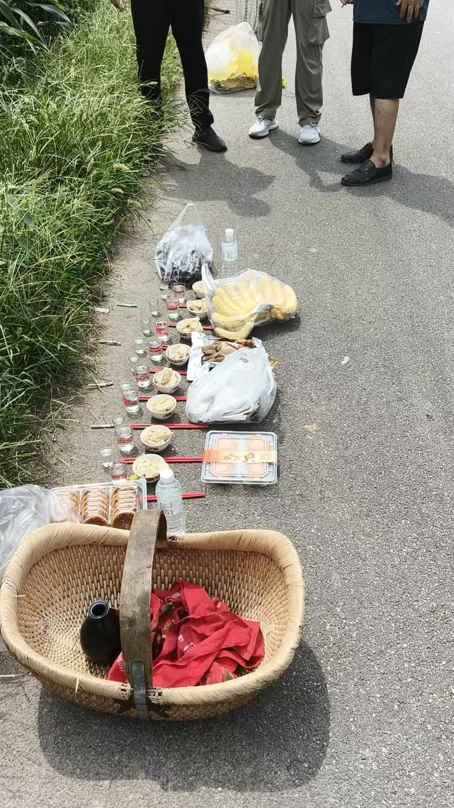
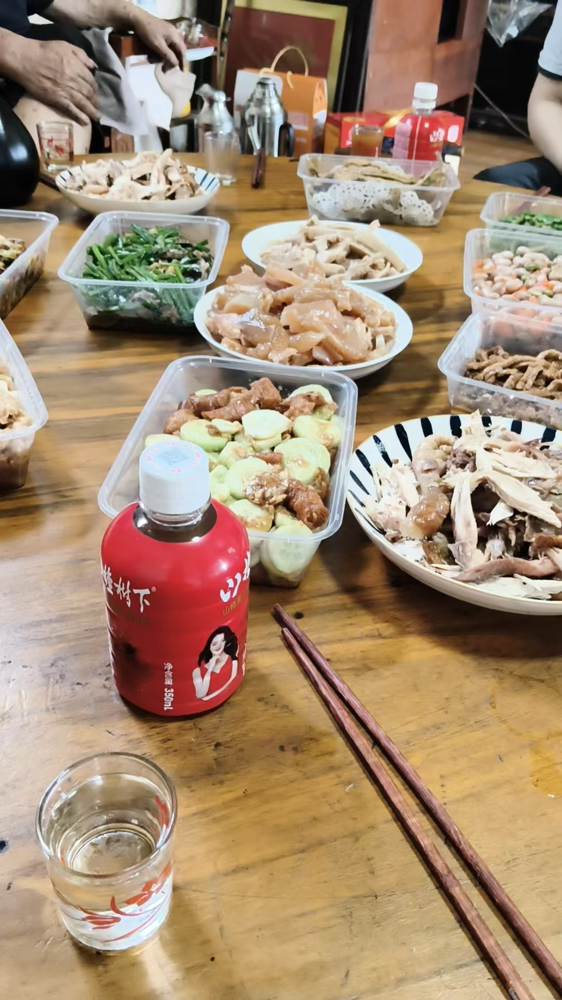

20260827中元节祭祖
原始对话记录

潍坊到家一路中雨，一路堵车
到了临朐竟然大晴天
奇怪，临朐一滴不下
我二哥的车也遇暴雨
我顺风车，到潍城没怎么下
今天太累了，中午喝了一杯，一两半就迷糊了
血糖低，血压八十，一百
根本原因，是上一次神坛供奉，没供酒
这事很奇怪，我不供酒，师傅们就不让我喝酒
这现象好多次了
以下为编者整理的主题文章
编者整理 · 主题文章
一路雨，一杯酒，一两半
导读：中元祭祖这一天，他在路上：潍坊到家一路中雨、堵车，到临朐竟是大晴天。中午喝了一杯，一两半就迷糊了。末了落到一句——上一次神坛供奉，没供酒。
中元节，回去祭祖。
这一页带着图片和视频，路上拍的，供桌拍的，大概都有。留下的文字，只落在两件小事上。
潍坊到家，一路中雨，一路堵车。
到了临朐，竟然大晴天。奇怪，临朐一滴不下。我二哥的车也遇暴雨。我顺风车，到潍城没怎么下。
同一片天，隔几十里，就不一样。
今天太累了。中午喝了一杯，一两半就迷糊了。血糖低，血压八十，一百。
末了，他给这件事找了个根。
根本原因，是上一次神坛供奉，没供酒。
这事很奇怪。我不供酒，师傅们就不让我喝酒。这现象好多次了。
前半页是路，后半页是一杯酒。中间隔着一个中午。
同批记录里，祭祖要备的是阴宅别墅、衣服、酒食、元宝香火。到家，上坟，烧纸，供饭，回来。
一天就这么过去了。
说明与免责：本站为民间修炼、民俗文化与传统文化资料的整理与记录，内容源自传承者口传与个人修习体会，仅供文化交流与研究参考，不构成医疗、健康、投资或任何功效承诺。所述内容属传统术数范畴，请理性看待；如身体不适，请及时就医。请遵守法律法规与公序良俗。